Londres

Répondants

Enjeux selon les enquêtés
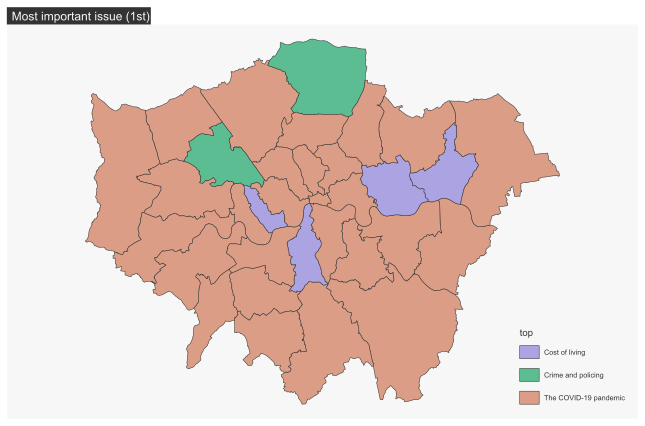Sur la carte ci-dessous, représentant le deuxième enjeu le plus important, on retrouve pour une grande majorité des cas le coût de la vie et le maintien de l’ordre comme enjeux importants. Sans grande surprise non plus, la City de Londres pense tout particulièrement à l’économie, notamment du fait qu’il s’agisse d’une entité concentrant des fonctions économiques importantes. En périphérie de Londres on remarque que le logement est un des enjeux majeurs pour certains boroughs.
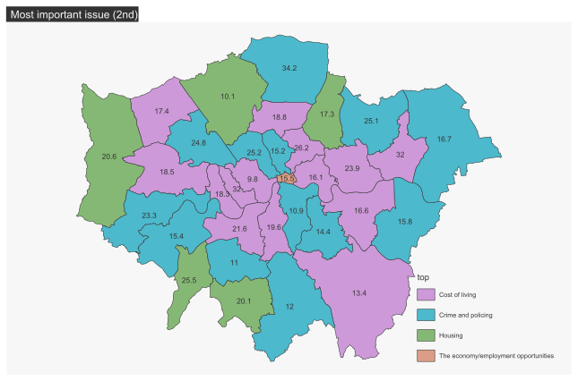
La vie dans son quartier pendant la Covid
Q22A

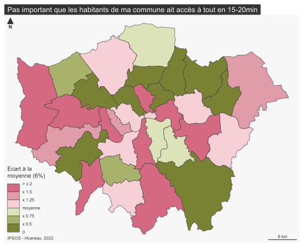

Quitter les grandes villes après le Covid ?
Q14A : How likely, if at all, is it that you will move out of Paris/votre commune in the next five years?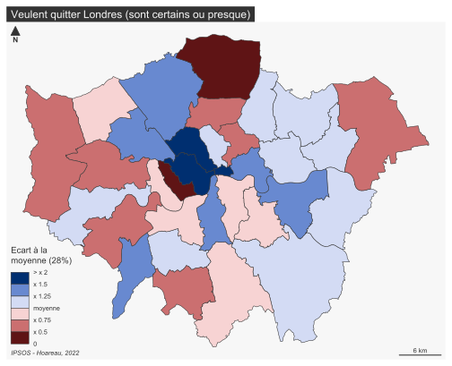


56% des enquêtes ont répondu qu’ils ne
comptaient pas quitter Londres, contre 28% qui
sont certains ou presque de vouloir quitter la ville. On peut conclure
qu’une majorité des répondants est donc satisfaite de son cadre de vie,
ou bien qu’ils sont attachés à ce dernier.
Dans le cas de cette question, la carte des répondants voulant rester à
Londres est intéressante. En effet, on remarque une sorte de clivage
entre l’est et l’ouest de la ville, avec quelques exceptions comme le
borough d’Havering, qui présente, sur le papier, des aspects favorisant
une bonne qualité de vie (chômage faible, espaces verts très présent du
fait de la Metropolitan Green Belt).
Mixité sociale et immigration
Q26 Immigration from outside of UK 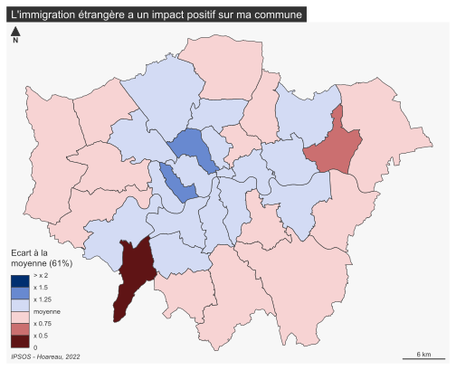 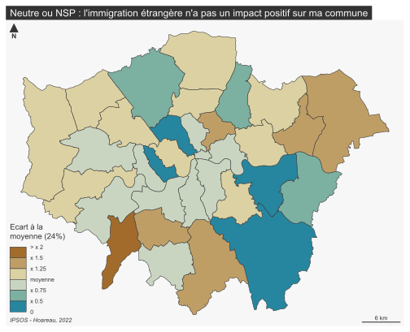
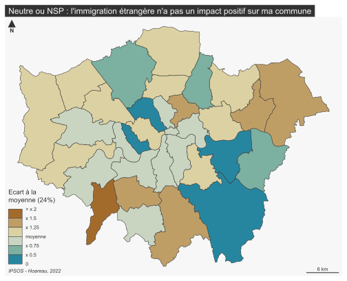
Pour une grande majorité (61%) des enquêtés, l’immigration venant de l’étranger a un impact positif sur leur ville. On remarque surtout que sur la carte des réponses positives, une différence entre le centre, plus favorable à l’immigration, et la périphérie qui l’est moins. Avec le borough Kingston upon Thames qui semble plus défavorable, ou plus neutre, vis à vis de cette question
Immigration from elsewhere within UK

 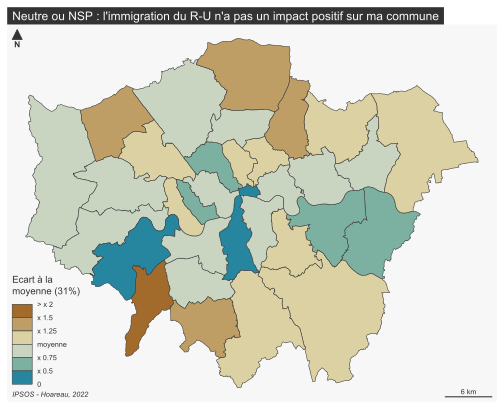
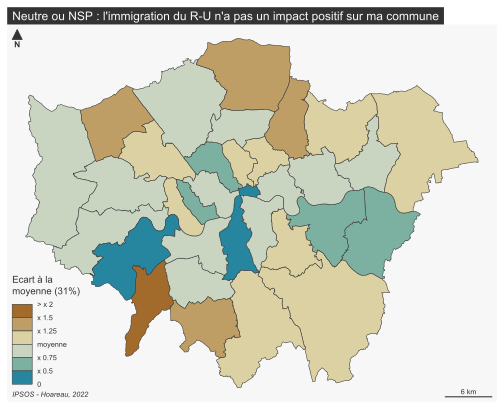
L’immigration venant d’ailleurs au Royaume-Uni est légèrement moins acceptée dans l’ensemble (58%), mais l’on retrouve une différence entre le centre et la périphérie, avec tout de même davantage de boroughs qui présentent un indice négatif. Kingston upon Thames est également en désaccord avec l’impact positif qu’a cette immigration.
I think Londres/Ma commune needs more immigration than the present level 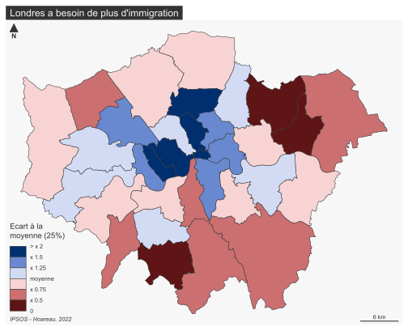 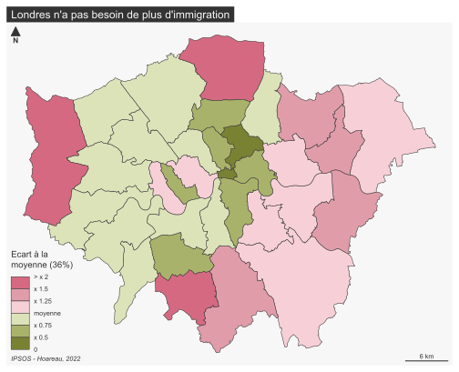

A la question de savoir si il faut plus d’immigration, on retrouve environ un tier des répondants partout, avec légèrement plus de réponses neutres et négatives. Il est intéressant d’observer un autre clivage est-ouest pour la carte des réponses négatives.
Sécurité
Day88% des répondants se sentent en sécurité dans leur quartier en journée. Cartographiquement, cela fait que les écarts à la moyenne sont faibles sur l’ensemble de l’espace étudié, on peut dire que la situation est assez homogène.
 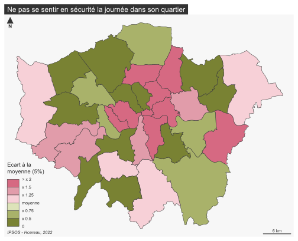 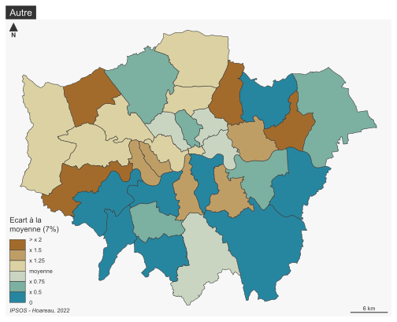
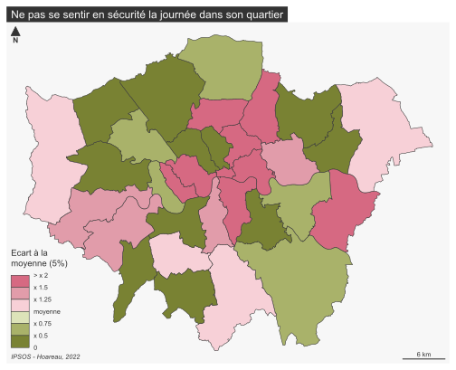 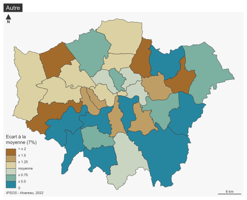 Night
La nuit, les répondants se sentant en sécurité tombent à 59% et la situation devient moins homogène. 19% ne se sentent pas en sécurité, et on retrouve ce sentiment davantage à l’ouest et au centre-est qu’à l’est ou dans le centre de Londres.
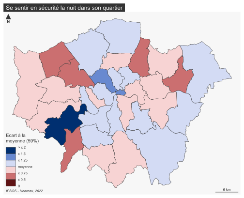 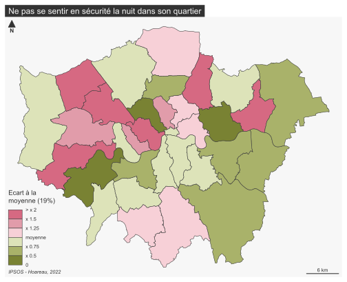 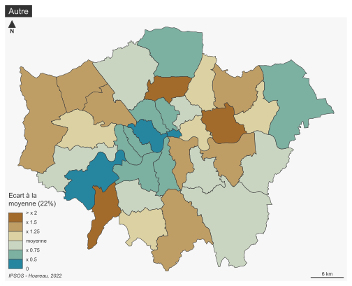
Logement, travail et vie de famille
LogementSe loger est abordable
65% des enquêtés pensent que se loger est trop cher pour eux, contre 20% pour le constat inverse. La city et quelques boroughs les plus au centre de Londres semblent davantage en capacité de se loger que le reste du territoire londonnien, notamment le sud-est de la ville et les boroughs les plus pauvres du centre (Isilington et Hackney).

 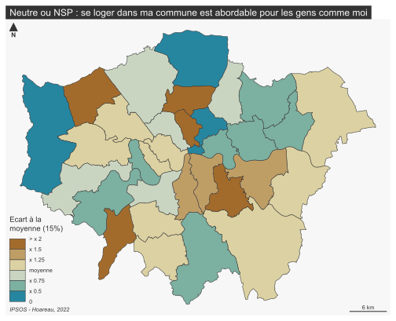
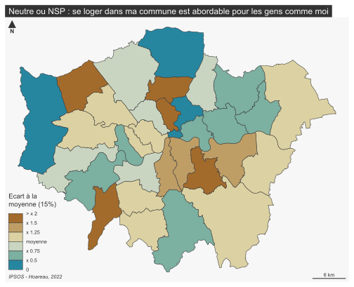 L’accès à la propriété est abordable pour les gens comme moi
Pour l’accès à la propriété, la réponse est assez homogêne sur l’ensemble du territoire puisque 89% des répondants pensent que ce coup est trop élevé.

 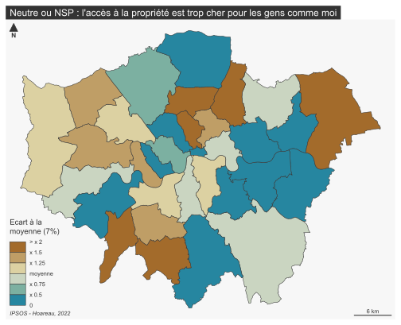
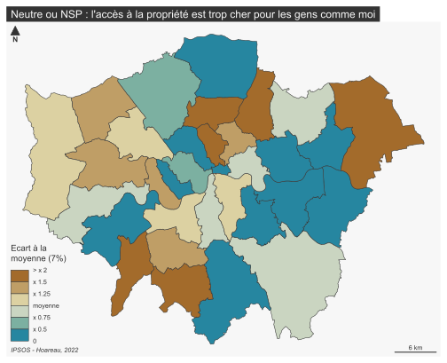
Télétravail 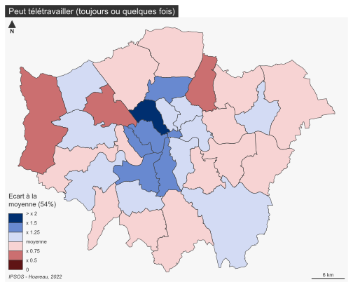 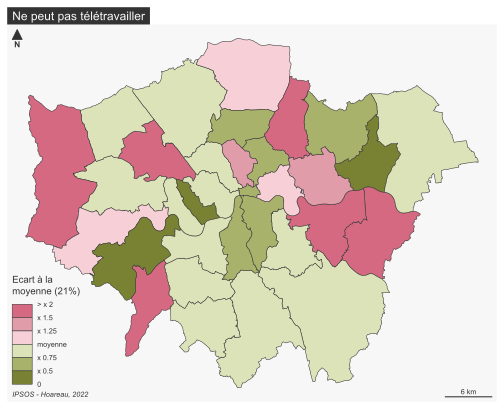 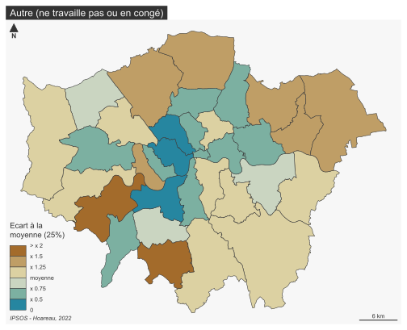
A Londres, une majorité (54%) des répondants ont la possibilité de télétravailler, et 21% n’en n’ont pas la possibilité. L’inner-Londres semble plus apte à télétravailler que le reste du territoire étudié.
Rebondir après la pandémie
Transports publics
Environ 45% des répondants sont soient optimistes ou neutres vis à vis de l’avenir des transports publics au sein de la capitale anglaise. La partie centrale et l’ouest de l’inner Londres sont davantages optimistes que la périphérie de Londres intérieur. Pour les boroughs les plus éloignés, la situation est plus hétérogène.
 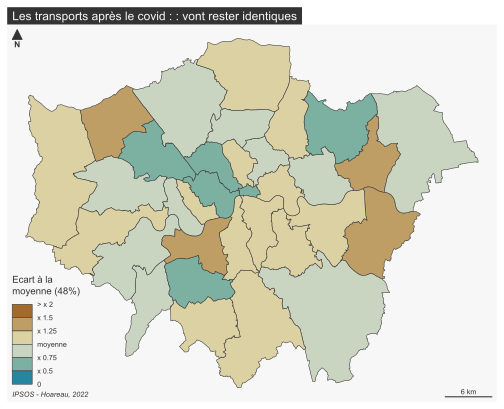
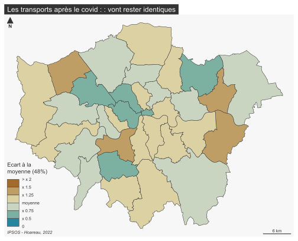 Abordabilité des logements
Comme vu dans la partie sur le logement, Londres est une ville chère, cependant 60% des répondants pensent que cette situation va s’améliorer dans les cinq prochaines années. Spatialement, on observer une certaine homogénéité puisque la quasi-totalité des boroughs sont proches de la moyenne générale. Seul le borough de Hammersmith and Fulham semble tendre vers plus de pessimisme vis à vis de cette question.


Opportunités d’emploi
Cette question de l’emploi observe également des réponses plutôt optimistes puisque 55% des répondants sont optimistes, contre seulement 14% de réponses pessimistes. On retrouve cependant certains boroughs à l’est et au sud de l’inner-Londres qui tendent vers plus de pessimisme.

Niveaux de pollution


Cutlure
 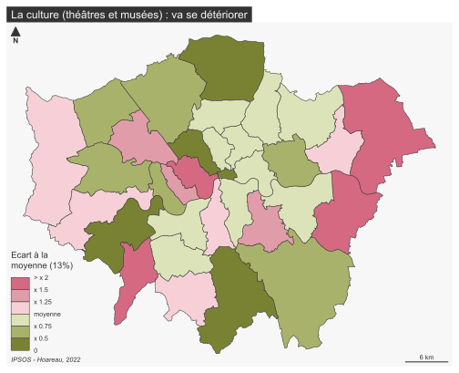
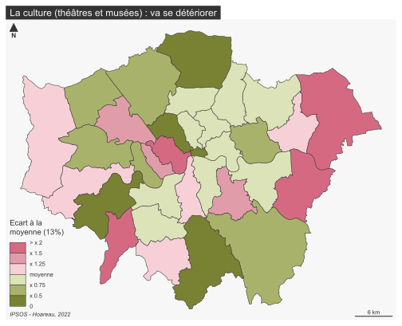 
Services publics
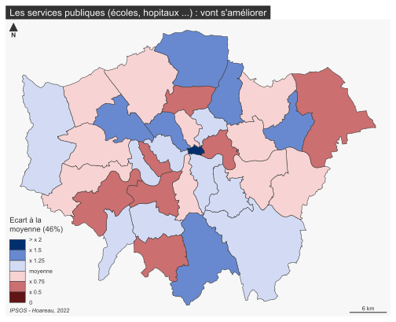 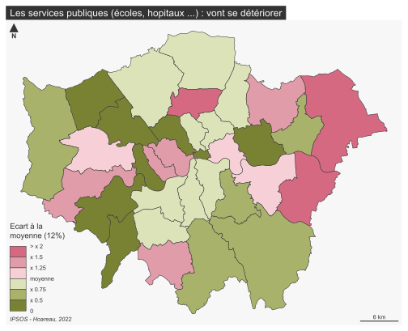 
Revenir
en haut de page